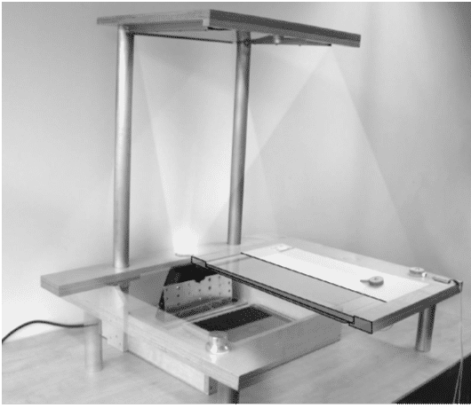

For a long time, design and research have been regarded as separate endeavors – the former residing in industrial practice and craft, the latter in academic experiments and reflection. In the past decades, as areas such as interaction design and other forms of design were growing their academic basis, became more widespread as subjects taught at universities, and grew a research culture, two things happened. First, doing research became a recognized part of designing products (and later services). Second, design activities, along with designed artifacts, would become established as the chief elements in the process of generating and communicating knowledge. Ever since Frayling’s influential speech (1993, 2015), these two have become referred to as research for design and research through design (RtD), respectively.
As of the latter years of the 2010s, explicit theory about RtD is still in its formative stage. Given this, the involved communities are still struggling to find the right words, models, and practices. In this chapter, outlined in Table 1.1, we try to sketch the field and its themes, show what’s been published, and draw parallels to other research approaches, both within interaction design and in broader areas of design and engineering.
| 1 | Working definitions | Research, design, prototype, artifact, knowledge, practice | Positions the terms in the field and scans it quickly so you can return and find it again later |
| 2 | History of the term | RtD and related |
Table 1.1 – Guide to reading the chapter
43.1 Introduction: ‘Design’ & ‘Research’
Both operative terms ‘research’ and ‘design’ come with a variety of meanings, connotations, and expectations. And often these are left vague and undefined. The purpose of research is seen as the production of knowledge that others can use in other areas than the producer of the knowledge is working on. This knowledge is generalized and abstract. The purpose of design is usually understood to be the creation of a specific solution to be applied in the world: for example, a race car, a smart pill dispenser, an online banking service. The solution has to fit the here and now. Nevertheless, some differences are often noted (see Table 2.1):
| Research | Design | |
| Purpose | general knowledge | specific solution |
| Result | abstracted | situated |
| Orientation | long-term | short-term |
| Outcome | theory | realization |
Table 2.1 – In general, the terms ‘research’ and ‘design’ carry different connotations.
Liz Sanders (2005) compared design research in academia and industry, and noted similar differences between the two approaches. We can see these differences below, in Table 2.2.
| Information-Based Design Research | Inspiration-Based Design Research | |
| 1 | Tends to be conducted by people who are trained in research and/or the applied social sciences | Tends to be explored and applied by designers |
| 2 | Has borrowed heavily from the scientific model of research with its adherence to the tenets of good research: reliability, validity, and rigor | Is discovering its own tenets of good research such as relevance, generativity, and evocativeness |
| 3 | Is built upon the results of investigation, analysis and planning | Is built through experimentation, ambiguity, and surprise |
| 4 | Relies primarily on extrapolation from past events as a way to move into the future. | Draws primarily from the future and the unknown, using imagination as the basis for expression. |
Table 2.2 – Sanders (2005) lists differences in ‘traditional’ (e.g., usability testing and ethnography) and more ‘designerly’ (e.g., cultural probes and generative techniques) approaches to design research.
Despite such differences, design and research activities can be surprisingly similar – both aim to create something new, building on what was known before.
Both contain parts of the other. Analysis and evaluation are research activities in a design process (but are less visible than concept design sketches or final products). And research projects also involve the development (including design) of apparatus, stimuli, and creative new directions (but are less visible in the academic publishing culture than results, proof, and statement of theory).
Research through Design (RtD) continues to develop in between these tensions, together with the development of design education as a scientific discipline at arts academies as well as regular and engineering universities, and with Ph.D. students both employing their design skills as essential ingredients to their research and becoming outspoken about this. As such, this exciting realm continues to expand, ever pushing at the frontiers so that the wealth of possibilities can yield groundbreaking insights as more becomes known.
43.1.1 Defining Research and Design
The academic design culture is still developing in overlap with the diverse and quite different cultures of engineering, the arts, (social) sciences, cognition, business studies, humanities, research methodology, and philosophy. Many of the terms used in the discourse come from these disciplines and carry implicit meanings and connotations. This can lead to misunderstandings where a writer and a reader, or a speaker and a listener, have different backgrounds and understand the terms differently. While such a hazard tends to be inevitable when worlds ‘collide’ in this way, the effect is undeniable: Discussions can become very confusing when terms such as design, research, interaction, and experience are chained together in various combinations.
As a remedy to this, for this chapter we will use working definitions stated in simple terms, to avoid, or at least postpone, getting entangled in the jargon and background knowledge of the various academic fields connected with our topic.
Table 2.3 lists some terms that will play a prominent role in the further discussions.
| Working Definition | Key Associated Terms | |
| Doing Research | Work done with the intention to produce knowledge for use by others | Question, hypothesis, theory, investigation, interpretation, generalization, validation, discovery |
| Doing Design | Work done with the intention to produce a feasible solution to improve a given situation | Idea and concept generation, synthesis, development, integration, discovery, prototyping, invention, implementation, realization |
| Artifact | Object (often material) created during a design process | Sketch, blueprint, brief, specifications, vision, proposal, recommendation, business plan |
| Prototype | Artifact used in research that can realize the (inter)action that is studied | Implementation, realization, test, exploration, solution, proof of concept, construction |
| Knowledge | Understanding about the world that can be communicated to others | Theory, book, publication, expertise |
| Design Practice | The ways in which design professionals conduct their work | Brief, contract, client, stakeholder, studio |
| Experiment | Specific: a piece of controlled, hypothesis-testing research; | Specific: hypothesis, statistics, (in)dependent variables; |
Table 2.3 – Working definitions of key terms used in this chapter
None of these definitions is without objection. So, here are a few notes on these terms to clarify why we need to define them explicitly. For instance, the inclusion that research is done ‘for use by others’ is a demarcation stating that the discussion focuses on growing a shared body of knowledge rather than personal growth only, not a statement that the latter cannot be called ‘research’ in other contexts.
We added the verb ‘doing’ to both design (and research) to emphasize we are talking primarily about design activities, not about the many different meanings that the noun ‘design’ can have: product, styling, community of professionals, etc. (Sanders & Stappers 2014, p26).
In the definition of ‘doing design’, we use the term ‘solution’ (rather than ‘plan’ or ‘proposal’) to indicate that a realization—albeit of an experimental nature—is typically part of RtD. Some uses of the term ‘design’ stop at the making of a proposal in the form of a vision, illustration, or storyboard. In RtD, often the struggle with the elements of realization is considered an important part of the work. The improvement strived for in designing can concern problems (e.g., bad elements of an existing situation) or opportunities (e.g., possibilities of new technologies). Its result can likewise be varied: a (mass-produced) product, a piece of software, a service, or a system. See Figure 2.4.
Figure 2.4 – The aimed-for results of research and design are often different. This chapter aims to describe academic theory about the contributions of design to knowledge, and in that respect is itself in the middle category, ‘research about design methods’.
The term ‘artifact’ originates in anthropology/archeology, and refers to a man-made thing, usually a material object. It will play an important role, because many researchers regard the things made by designers to be core to RtD. (Note: the term ‘artifact’ means something completely different in measurement methodology, namely an error in measurement such as a scratch on a photograph.)
The term ‘prototype’, along with the verb ‘prototyping’, has become popular in design research, and especially so in interaction design. Originally, the term indicated a precursor of a mass-produced product, which shares its material qualities, but will undergo testing and development during implementation. In design research, the term ‘prototype’ is also used for all kinds of product-like physical constructions. In interaction design, paper prototyping can be as simple as drawings on paper. Prototypes are a narrower category than artifacts. They are ‘like products’ in the sense that someone can interact with them and experience them, whereas sketches and blueprints are less direct representations about—rather than realizations of—intended situations and interactions. In the RtD literature, some authors use the term ‘artifact’ (or, in British/Commonwealth English, ‘artefact’) with this meaning that we reserve for ‘prototype’, but without making the difference explicit. In this chapter, we use the distinctions above – that every prototype involves an artifact or artifacts, but that not every artifact is a ‘prototype’ (see Figure 2.5).
|  | ||
| Sketch (over photo) | Diagrams | Prototype |
Figure 2.5 – Examples of different types of ‘artifacts’ in design, only one of which we will refer to as a ‘prototype’ (from Keller, 2005, pages 89, 109, 107).
For the term ‘knowledge’, we again hope that it doesn’t cause any confusion. An important aspect of knowledge is that it connects to something in the world and that it has a use in guiding someone’s future actions in the world. Knowledge can be explicit (e.g., described with words and pictures in a book) or tacit (e.g., when a professional craftsman builds on his earlier experiences). In the context of research (through design or otherwise), knowledge is sought so it can be shared with others. Explicit knowledge can be shared in straightforward ways; how, and to what degree, that can be done with tacit or implicit knowledge is part of the discussion (see section 4.1).
Finally, let’s look at two words which carry very different meanings: (design) practice and experiment. We will not use the term ‘practice’ extensively, but it pops up in two quite different meanings in the literature. One meaning is ‘a designerly way to deal with things’, as in finding a possible solution through sketches and quick prototypes instead of theoretical reasoning, mostly used to refer to the way work is done in art & design studios. The other meaning is ‘the work situation of design professionals’, in which they typically work for a client, to a brief which may include the point that the clients’ offerings are part of the designed solutions, with commercial constraints of time, means, and budget. The former meaning is probably intended where RtD is defined as “design practice is brought to bear on situations chosen for their topical and theoretical potential […]” (Gaver 2012, p937), the latter where Zimmerman, Forlizzi, and Evenson (2007) propose a model “to benefit the HCI research and practice communities” (p493).
Similarly, the term ‘experiment’ is narrowly understood (in ‘the scientific method’) as a piece of controlled research, in which variables are isolated and controlled, and a hypothesis is validated or rejected. But the term has another use – in a much broader sense of ‘trying something out to see if it works’ as either part of an inquiry or program (Redström 2011) or as part of an action-oriented intervention (Halse et al. 2010) (see section 4.3).
43.1.2 Relations between design and research
Research and design are closely related, but different. Both are intentional activities with the goal of creating something new. Yet they differ in the way they are (typically) conducted, and the values by which their outcomes are (typically) judged. Since the second half of this century’s first decade, many possible juxtapositions have received attention – one as part of the other, both as the same or completely different, or complications arising from applying one onto the other (or onto itself).
43.1.3 Research for Design: Doing research as a part of doing design
The activities of observation, measurement, interview, literature review, analysis, and validation, which are part of many design approaches, clearly come under ‘research’. Modern design curricula pay explicit attention to research skills, ranging from the ability to gather and interpret scientific knowledge, to generating new knowledge where that is needed, as illustrated in Figure 2.6. Because scientific theories are defined at a generalized and abstracted level—e.g., “people can deal well with up to 7±2 categories”—there is a gap that must be bridged when applying this in a design brief – e.g., “designing an information service for elderly Dutch people to organize their weekly shopping”. The gap has to do with both the level of abstraction (e.g., “What ‘categories’ play a role in the design situation?”) as well as sufficiency (e.g., “Can we find appropriate ways of ‘identifying and dealing with’ selected categories?” and “How do these fit in with the dozens of other considerations that are needed in this situation?”). Many design curricula these days pay explicit attention to gathering and applying relevant scientific and technological information, and to conducting studies to learn specific information about the situation for which the design is made, sometimes referred to as research for design. In particular, technical feasibility and usability studies of prototypes—and more recently, early phase participative studies into user requirements (‘user research’ or ‘design research’)—have become accepted ingredients of user/human-centered design methodology.
Figure 2.6 – Design informed by research: Relevant scientific and technological information is gathered and applied, and studies are conducted so as to learn specific information about the situation for which the design is made.
43.1.4 Research through Design: Doing design as a part of doing research
When we talk about RtD, we indicate design activities that play a formative role in the generation of knowledge, typically actions that we’d recognize as design activities from one of the design professions, that depend on the professional skills of designers such as gaining actionable understanding of a complex situation, framing and reframing it, and iteratively developing prototypes that address it. This designerly contribution may be as simple as making stimulus material for use in somebody else’s research. However, more typically, it consists of the development of a prototype (or artifact) that could be mistaken for a ‘product’, and that plays a central role in the knowledge-generating process (See Figure 2.7). For instance, it shows a hitherto nonexistent combination of factors as a provocation for discussion, or it creates the possibility for people and products to engage in interactions that were not possible before, and these can come into existence—indeed, become observable—through the design. Moreover, in the generative process of ideation, concept development, and making that brought this prototype into existence, the designer(s) will have struggled with opportunities and constraints, with implications of theoretical goals/constructs, and the confrontation between these and the empirical realities in the world. In other words, any designer involved with the prototype will have had to navigate around the real-world obstacles that got in the way of building the best bridge between the product and its usership. This thinking process in itself brings about insights, some of which can be made explicit and shared with others. It is how facts emerge from the shadows and help future endeavors.
“The pessimist complains about the wind; the optimist expects it to change; the realist adjusts the sails.”
—William Arthur Ward, American writer of inspirational maxims
Most academic publications about RtD focus on the prototype, and illustrate some of the design steps that led to it with a message like “It really took design skills to make this prototype, and we took a lot into account.”, just as illustrations of the design activities that are common in industrial design practice. Yet these activities themselves may be where insight was generated.
“The designing act of creating prototypes is in itself a potential generator of knowledge (if only its insights do not disappear into the prototype, but are fed back into the disciplinary and cross-disciplinary platforms that can fit these insights into the growth of theory).”
—(Stappers 2007)
The act of designing, of making, requires the designer to face several confrontations: between competing or conflicting background knowledge, between theory and technology, and between dream and reality. Making provokes a particular cognitive activity, one which can be used to make people aware of tacit values and latent needs (Stappers 2013).
Figure 2.7 – Designerly ways of contributing to research (left) and doing research (right). In the former, design activities create tools or stimuli ‘on spec’ from the research; in the latter, the design actions play a formative role in the generation of knowledge.
43.1.5 Research is Design: Doing design is doing research
Some authors (e.g., E. Zimmerman 2003) indicate that design is a form of research, or that design and research are essentially the same, in that both activities can result in new knowledge. Figure 2.8 expresses this in the style of the previous diagrams as a single ‘blob’ and no arrows. This expresses the joy of designers that in every design project they (can) learn something: about the users’ lives, about a piece of technology, about a new mechanism or form, about how to create an effective prototype, or about how to evaluate it under challenging circumstances of limited budget, time, and means. But equating the two robs us of an instrument to talk about possible differences, and there are differences. And not every design process yields knowledge that is (made) available to others; in fact, most design products end with a ‘design’… and that’s it. Many don’t make it to a product. History is littered with such gems that never made it into the ‘real world’, even if their real-world potential might have been sound enough to sell well. And not every piece of research requires the creation of a new solution – a lot of research is content at describing the status quo. Friedman (2008) complains that many authors who approach research by design “adopt a misunderstood term for its sound-bite quality, linking it to an ill-defined series of notions that equate tacit knowledge with design knowledge, proposing tacit knowledge and design practice as a new form of theorizing” (p157). Like others, Friedman says the equation of the two is not useful.
Figure 2.8 – Research and design activities are seen as the same by some authors.
43.1.6 doing research, and vice versa
The reverse view, that design and research are totally different or complementary activities or even that they are mutually exclusive, is heard less often. In schools where academics mostly do research and design practitioners solely handle the teaching, one sometimes sees the distinction between researcher and designer as a separation of roles and of values, usually with the statement that what applies to one is irrelevant for the other. Again, this distinction is not a helpful one in the context of this chapter; however, it is handy to know in a general sense.
43.1.7 Other relations
There are several other relations between research and design. Here, we’ll finish with a few, not because we want to puzzle our readers with word games, but because we will need them in a later discussion, namely in section 5. One can study how design is done by entering the realm of research into design (Frayling 1993); sometimes, it is referred to as design methodology research.[1]
Similarly, the terms can be used self-referentially, as researching research, in the evaluation of research methods as in Science Studies, and designing design, in cases where designers develop new methods and tools to support design activities – e.g., cultural probes. Quite a large part of the wealth of conference and journal papers in design is devoted to describing the process that was carried out, and presenting and reflecting on experiences with these tools and methods. Often, this is what forms the spearhead of the main academic contribution of the paper.
Finally, there is a sense in which any research project is in itself designed. The term ‘experimental design’ or ‘design of the study’ is used in various disciplines to refer to the planning and setup of a study – e.g., which conditions to use, or how to operationalize theoretical concepts into measurement actions. Although these actions are very real (and also apply to the type of research projects we discuss), this general understanding is not what we mean by RtD. Rather, we take it to be the production of knowledge by means of design activities.
43.1.8 er?
Should these activities be performed by a specially trained professional, someone with an official degree such as a ‘designer’? Some authors see RtD as the ways in which design practitioners can contribute to research, or the way design practice brings about knowledge in general. Our focus in this chapter lies on the design(erly) activities used in the production of knowledge – not on the qualifications of those who may be most suited for that by training or experience.
That being said, we have chosen the examples mainly from work by people with design training, because this is where the RtD discussion is most alive. But already there, there is a great variety in what the design profession entails, what defines which activities he or she is expert at, and in what way and about which aspects the knowledge is produced and shared.
Many of the application areas of design and research require collaboration between individuals from different disciplines, each with his or her own skills, expertise, and attitude. A trained designer can have several roles in such a team, including communication, facilitation, process management, framing and concept formation, explorative prototyping, evaluation, and critique – and so can other stakeholders in the process (Basballe & Halskov 2012).
43.1.9 Conclusion
This varied set of relations yields plenty of opportunity to be confused about what happened in a research project that used design methods. Was the knowledge that was generated about the prototype (i.e., a design result)? Was it about the way participants interacted with it (i.e., a contextual research result)? Was there something special about the way the design or research was conducted? Was the study dependent on (professional) design skills? Or was it (a mix of) all of these? We’ll return to these questions throughout the chapter.
43.2 History of the term ‘RtD’
Although most of the academic literature using the term ‘Research through Design’ is within the HCI community, the term originated in design, with no particular reference to interaction design. In fact, it also included other areas such as materials. The phrase ‘Research through Art and Design’ was coined by Frayling (1993, later positioned in its historical context in 2015) in a speech to the RCA, where he indicated three ways in which doing research would be of interest to the design community: research into art and design (including historical and perceptual research), research through art and design (mentioning materials, product development, and action research), and research for art and design (illustrating it with Picasso’s gathering of reference materials, “where the thinking is, so to speak, embodied in the artefact,” p5). Frayling’s brief descriptions align well with the definitions given in section 2.2 above. In later discussions, the phrase ‘art and design’ was shortened to just ‘design’. Some authors would take the shorter term for convenience, or because they felt less at ease with art in their academic community; others were to broaden the argument to the diversity of cultures within design, or even because they didn’t see the difference between art and design.
The term ‘Research through Design’ has mainly seen use in four ‘pockets of energy’ with different background cultures and geographic locations: the art and design community in the UK and Scandinavia, the technical universities and design academies in the Netherlands, and the human-computer interaction community in the US. Figure 2.1 gives an overview of the key sources used in this chapter. But the relevant literature is broader, as not everyone addressing the issues we identified and discuss in section 4 uses the same terminology.
Figure 2.1 – A map of RtD projects and articles, spread over time and country of origin of the authors. Articles shown here are cited 10 times or more by articles in the references list of this chapter. In italics, we see the example projects of section 3; in boldface, the conferences and funding schemes.
43.2.1 In HCI and IxD
The Human-Computer Interaction (HCI) and Interaction Design (IxD) communities have been most prolific in developing explicit theory about RtD, possibly because the emergence of these fields occurred in a peer-reviewed academic culture embedded in and close to computer science in research universities. Both HCI and IxD are young fields. Closely tied to practical application, they have to deal with abstract problems raised by the difficulties of giving form to the new possibilities and complexities offered by information technology.
Possibly the first mention of the relation of Research and Design in this manner is in the introduction of Laurel’s (2003) book Design Research, and the subject is addressed in E. Zimmerman’s chapter on design research by play. This succinctly describes the intertwining of learning and solving that occurs in every design project, and emphasizes the point that questions emerge from doing design.
Needs and Pleasures
“Design is a way to ask questions. Design Research, when it occurs through the practice of design itself, is a way to ask larger questions beyond the limited scope of a particular design problem. When Design Research is integrated into the design process, new and unexpected questions emerge directly from the act of design.
(…)
Iterative design is a process-based design methodology, but it is also a form of Design Research. In each of these three case studies, questions emerged out of the process of design – questions that were not part of the initial problem but that were nevertheless answered through iterative design and play.”
—(Zimmerman, 2003, p. 184)
Discussion in HCI took off with J. Zimmerman and Forlizzi’s papers. Zimmerman, Forlizzi, and Evenson (2007, p. 494) demarcate the subject as follows: “we intend the term design research (sic) to mean an intention to produce knowledge and not the work to more immediately inform the development of a commercial product”. In Zimmerman, Stolterman, and Forlizzi (2010), RtD is defined as “a research approach that employs methods and processes from design practice [sic] as a legitimate method of inquiry”. They interview researchers and find that many of them “view RtD as a designerly inquiry focused on making of an artifact with the intended goal of social change” (which would be called ‘social design’ or ‘critical design’ elsewhere) and advocate a more rigorous formulation of methods to make the legitimacy more acceptable to established scientific traditions. Similarly, Keyson et al. (2009) propose to include formal measurement as part of RtD so as to validate and strengthen the robustness and generalization of findings.
Gaver argues against such formalization as running the risk of stifling essential qualities of designing and positioning design practice against “some dominant models of doing research”; he warns against “hopes for general applicability of findings”. Instead, the claims for general knowledge and the hopes for sharing insights should be more informed about the patterns in which expert knowledge is shared in craft communities, through examples and reflection. Gaver (2012) defines RtD as “design practice” that “is brought to bear on situations chosen for their topical and theoretical potential” with the resulting designs seen as “embodying designers’ judgments about valid ways to address the possibilities and problems implicit in such situations” and reflection on these results allowing “a range of topical, procedural, pragmatic, and conceptual insights to be articulated.” Bowers (2012) and Gaver and Bowers (2012) indicate that much of the knowledge about/in design cannot be readily abstracted through the verbal channels of academic journals, but instead is conveyed by annotated portfolios: collections of design models, sketches, photos, etc., combined with explanations that frame and bring forward the salient aspects carried in these artifacts.
Koskinen et al. (2011) summarize these positions in the coursebook Design Research through Practice. In addition, they present a number of projects, and how they fit into design activities, by distinguishing three different types of designerly ways of doing research identified by the location of dissemination: field, showroom, and lab.
43.2.2 In design
In the design community, the term grew in popularity only more recently, again as the field was seeking to strengthen its academic grounding and to develop a research culture. Horváth (2007) reviewed a variety of design research projects and separated them into three approaches, depending on the relation between design and research: 1) researchers using the methods of established disciplines and applying them to design practice, 2) designers in industrial practice reflecting on their experiences in industrial projects, and 3) ‘design-inclusive research’, in which designerly actions, notably the creation of research prototypes, have played an important role (see also section 7.1).
Several authors have begun to collect and look at examples of research projects in which the researcher was a designer who placed, in Brandt and Binder’s words, “designerly experiments at the core of the research” (Brandt & Binder 2007). Their study, for example, compares three Ph.D. research projects by designers, each of which is differently informed by the use of design experiments as a means to explore a possible program (intended as a set of questions or inquiry): Kristina Niedderer (Falmouth College of Arts, UK 2004), Ianus Keller (TU Delft, Netherlands 2005), and Tuuli Mattelmäki (University of Arts and Design Helsinki, Finland 2006).
In the UK, a biannual conference started in 2013, which focuses on practice-based design research, i.e., the knowledge that comes out of design projects. The conference welcomes submissions from all areas of design and comprises a curated exhibition of design research artifacts accompanied by round-table discussions in so-called ‘Rooms of Interest’. (RTD-conference, http://researchthroughdesign.org/)
The term ‘RtD’ has also entered research policy. In 2014, the Netherlands Organisation for Scientific Research launched a research program called ‘Research through Design’, specifically for strengthening research in the creative industry and the various design disciplines, ranging from Industrial Design to Gaming, Architecture, and Fashion (NWO-call). Most of the awarded projects in the Dutch program were collaborations between universities and academies, often involving professional design agencies and industrial partners.
Design departments in various universities in Europe are including explicit reflection on methods of design and research high on the agenda. However, there is considerable variety in the work approaches, and in the academic settings where the discussion takes place. For instance, in the UK and Scandinavian countries, RtD grew in the art schools, with an emphasis on crafts, studios, and exhibitions. In the Netherlands, the Universities of Technology at Delft and Eindhoven have been prominent, which shows an explicit linkage to industry, technology, and the social sciences. In the USA, the work centers mostly around HCI-based researchers (Zimmerman and Forlizzi at CMU, and Stolterman and Bardzell at Indiana University).
Less constrained by the performance assessments that determine many aspects of research in the UK and Commonwealth countries such as Australia and Canada, and because of often fully salaried doctoral positions (e.g., in Sweden) and a close connection to the creative industries (e.g., in the Netherlands), Northern European countries have developed a great deal of criticality and experimentation with questions, forms, and formats of knowledge production. As a result, rather than place emphasis on strong distinctions, the Scandinavian countries have developed a spectrum of approaches that might be broadly characterized as ‘research through design’, ranging from practice-based (Mäkelä 2007) to ‘constructivist’ (Koskinen et al. 2011) to ‘programmatic’ approaches to interdisciplinary research (Brandt & Binder 2007).
43.2.3 Beyond the design community
In section 2.2, RtD was operationalized as creating knowledge through a process in which design artifacts, notably prototypes, are made, tried out, and reflected upon. Although the RtD literature sees this as the particular niche where design skills, professionals, and communities earn their position in research, such approaches are also found outside ‘design’.
One approach in social sciences that is often mentioned as being related to the way RtD is conducted is Action Research. Kurt Lewin, the father of Action Research, emphasized that understanding something (research) and improving something (design) go very well together. The desire to make improvements can motivate and guide the learner, a statement close to the heart of designers (and resonating with E. Zimmerman’s observations about learning from design projects earlier in this section):
“If you want truly to understand something, try to change it.”
—(Kurt Lewin cited in Charles W. Tolman (1996) “Problems of Theoretical Psychology – ISTP” 1995. p. 31)
A rapidly growing field where RtD is conducted is also Design Anthropology (Smith et al. 2016). Design Anthropology focuses on working out the tension between the descriptive nature of anthropological research and the future-making attitude of doing design. Examining what design anthropology is and what it is becoming, scholars and practitioners in this field engage in and promote RtD processes and methods. Much of the argumentation for RtD as a different way of doing research involved comparison to the ruling positivist paradigm of experimental research methodology that was especially strong in HCI because of its roots in psychological research in the 1960s. Various authors justify RtD as standing apart from those reductionist, rational paradigms (Stolterman 2008), warn against reducing RtD to its methods (Gaver 2012), or advocate a strengthening of those ties (Keyson 2009, Zimmerman et al. 2010). But the wider field of scientific research has been much larger. In his ‘20 great experiments’, Rom Harré sketches a great variety of methods behind breakthroughs in the history of science: from Aristotle’s observation of the growth of the egg, to the null results of Michelson and Morley which formed the major support for the theory of relativity (see section 5.4). Variety in methods outside of design research is so large that the methods inside it may well have more connection points than we might expect.
Engineering in particular has a history in which the artifacts, as well as a design goal, have led the way. Bridges, manned flight, agriculture, medicine, and the military provide many examples and framings for comparison. In the next section, we will include one such example—namely, the Wright brothers’ development of the airplane, as an RtD case.
Another parallel can be found in industrial practice in the automotive sector, where the big manufacturers have their designers develop concept cars, not in order to put these on the market, but as a way to explore and prove, and communicate possible (and desired) new directions for their company. But although concept cars have a history of several decades and substantial investment, little academic work is available about how they can be seen as research projects (Mejia 2016). Such visionary projects and practices have been picked up also in HCI. Zimmerman, Forlizzi, and Evenson (2007) discuss Philips’ “vision of the future” as one example of RtD. In each of these, designerly action is made not for the purpose of an immediate commercial product, but for a more general understanding that leads to application elsewhere.
43.2.4 Labels and names
The term ‘RtD’ has gained popularity as a label to indicate the specific, unique contribution that doing design can bring to research efforts, but its issues are not always brought forward under that name. As is typical for design, there is a proliferation of ‘brands’ under which techniques and theories are marketed. Often, authors choose a different name because they don’t think the term ‘Research through Design’ entirely coincides with the type of research-design combinations they are addressing.
The field does not share a single jargon. Table 2.9 lists some of the labels given to such ways of doing research with a designerly component. Note, however, that few of them are described precisely enough to give a sharp demarcation, or to tell others how to do it successfully. Some of the authors we have not mentioned so far we will discuss in section 4.
| Label | Authors include (but are not limited to) |
| Experimental Design Research | Brandt & Binder (2007) |
| Experimental Research through Design | Keyson & Bruns-Alonso (2009) |
| Design Research through Practice | Koskinen et al. (2011) |
| Constructive Design Research | Wensveen & Matthews (2014) |
| Concept-Driven Design Research | Stolterman & Wiberg (2010) |
| Design-Inclusive Research | Horváth (2007) |
| Inquiry-driven RtD | Odom & Wakkary (2015) |
| Interaction Design Research | Zimmerman, Forlizzi, Stolterman (2007) |
| Iterative Design | Zimmerman, E. (2003) |
| Programmatic Design Research | Brandt, Redström, Eriksen, Binder (2011) |
| Research-Oriented Design | Falmann (2007) |
Table 2.9 – Some examples of different jargon terms used to refer to designerly ways of doing research
43.2.5 Conclusion
Research through Design is a term that is used primarily in academic work in the design communities, especially in interaction design and HCI, but it shares more than is usually discussed with other arts and engineering disciplines, and with design practice. In many places, we see that designerly actions not only contribute to achieving a local improvement in a single product or situation but also serve to discover, exemplify, clarify, and promote more general principles, which can be used elsewhere.
The views expressed in the literature do not easily fit into a single mold. The authors come from and refer to different backgrounds, have different aims, discuss different aspects, and build on different values. Some try to set RtD apart from other types of research (e.g., established methods in the sciences and social sciences). Others try to bring it closer to these methods, or to justify its existence as something else. The common core is that they advocate the contribution of designerly activities and qualities to the knowledge outcome, especially those activities that introduce prototypes into the world, and reflect, measure, discuss, and analyze the effect, sometimes the coming-into-being, of these artifacts.
As section 2.4 showed, the literature often introduces new labels, especially nouns to indicate a particular type of research, instead of discussing aspects of a shared way of doing research. Especially where authors then don’t refer to specific instances of ‘research’ or ‘design’, it becomes difficult for the readers to distinguish if they are presenting views of the same way of going about RtD, or totally different ways of going about it, which may occur side by side. As always with discussing abstractions, having a shared set of concrete things as examples and cases and possible instances certainly helps. This is exactly what we try to put forward in the next section.
43.5 References
Bang, A. L., & Eriksen, M. A. (2014). Experiments all the way in programmatic design research. Artifact, 3(2), 4-1.
Bardzell, S., Bardzell, J., Forlizzi, J., Zimmerman, J., and Antanitis, J. (2012). Critical design and critical theory: The challenge of designing for provocation. In Proc. of DIS 2012. ACM: New York.
Basballe, D. A., & Halskov, K. (2012, June). Dynamics of research through design. In Proceedings of the Designing Interactive Systems Conference (pp. 58-67). ACM.
Bernstein, M. (1996). Grand eccentrics: turning the century: Dayton and the inventing of America. Orange Frazer Press.
Binder, T. & Redström, J. (2006) Exemplary Design Research, Proc. Wonderground 2006, Redström 2011, Ph.D. theses
Blevis, E, Hauser, S., Odom, W. (2015) Sharing the hidden treasure of pictorials, interactions, 22(3), 32-43.
Boer, L., & Donovan, J. (2012, June). Provotypes for participatory innovation. In Proceedings of the designing interactive systems conference (pp. 388-397). ACM.
Boess, S. (2009). Designing in research: Characteristics and criteria. Rigor and Relevance in Design.
Bowers, J. (2012, June). The logic of annotated portfolios: communicating the value of 'research through design'. In Proceedings of the Designing Interactive Systems Conference (pp. 68-77). ACM.
Brandt, E., & Binder, T. (2007). Experimental design research: genealogy, intervention, argument. International Association of Societies of Design Research, Hong Kong.
Brandt, E., Redström, J., Eriksen, M. A., & Binder, T. (2011). XLAB. The Danish Design School Press, Denmark.
Brandt, E. (2016). The Perform Codesign Experiment – on what people actually do and the relation between program and experiment in research through design. In Proceedings of IASDR 2015 Interplay (pp. 234-249).
Buchenau, M., & Fulton Suri, J. (2000). Experience prototyping. In Proceedings of the 3rd conference on Designing interactive systems: processes, practices, methods, and techniques (pp. 424-433). ACM.
Cox, D. J. (2005) “Visualizing the Cosmos,” in INSAP Inspiration of Astronomical Phenomena, Fifth International Conference Proceedings, June 26 – July 1, 2005, pg. 52; invited speaker, Friday, July 1, 2005.
Crampton-Smith, G. (2006) Design as research that makes a difference. In: van der Lugt, R., and Stappers, P. J., (Eds) Design and the Growth of Knowledge. Delft, the Netherlands: ID-StudioLab Press
CRISP (2015) Is it a Service? Is it a Course? It’s Super-Maker! In van Erp, J., de Lille, C., Vervloed, J., den Hollander, M., Aretz, D. CRISP 5: This is Crisp. Creative Industry Scientific Programme. Page 5.
Cross, N. (1999) DesignResearch: A Disciplined Conversation. Design Issues 15, 2, 5-10.
Dalsgaard, P., & Halskov, K. (2012, June). Reflective design documentation. In Proceedings of the Designing Interactive Systems Conference (pp. 428-437). ACM.
Dalsgaard, P., Halskov, K. Basballe, D.A. (2014) Emergent Boundary Objects and Boundary Zones in Collaborative Design Research Projects, DIS 2014
Dalsgaard, P., Halskov, K., Bardzell, J., Bardzell, S. & Lucero, A. (2016) Documenting Design Research Processes, DIS 2016
Desmet, P., Overbeeke, K., & Tax, S. (2001). Designing products with added emotional value: Development and application of an approach for research through design. The Design Journal, 4(1), 32-47.
Djajadiningrat, T., Wensveen, S., Frens, J., & Overbeeke, K. (2004). Tangible products: redressing the balance between appearance and action. Personal and Ubiquitous Computing, 8(5), 294-309.
Dunne, A., & Raby, F. (2001). Design noir: The secret life of electronic objects. Springer Science & Business Media.
Fallman, D. (2007). Why research-oriented design isn’t design-oriented research: On the tensions between design and research in an implicit design discipline. Knowledge, Technology & Policy, 20(3), 193-200.
Faste, T., & Faste, H. (2012). Demystifying “design research”: Design is not research, research is design. In IDSA Education Symposium.
Fernaeus, Y., Tholander, J., & Jonsson, M. (2008, February). Towards a new set of ideals: consequences of the practice turn in tangible interaction. In Proceedings of the 2nd international conference on Tangible and embedded interaction (pp. 223-230). ACM.
Feyerabend, P. (1993). Against method. Verso.
Frayling, C. (1993) Research in Art and Design. Royal College of Art Research Papers, 1(1), 1-5
Frayling, C. (2015) Closing Provocations of the 2015 Research through Design conference. http://rtd2015.herokuapp.com/programme/ frayling
Frens, J. (2006). Designing for rich interaction. Integrating form, interaction, and function. Ph.D. Thesis. Eindhoven University of Technology, the Netherlands.
Friedman, K. (2008) Research into, by, and for design. Journal of Visual Arts Practice 7(2), 153-160.
Gaver, W., Beaver, J., Benford, S. (2003). Ambiguity as a Resource for Design. Proc. of CHI ’03, 233-240.
Gaver, W. (2012, May). What should we expect from research through design?. In Proceedings of the SIGCHI conference on human factors in computing systems (pp. 937-946). ACM.
Gaver, B., & Bowers, J. (2012). Annotated portfolios. interactions, 19(4), 40-49.
Giaccardi, E. (2017). Histories and Futures of Research through Design, Opening provocation RTD 2017, Edinburgh, UK: March 21, 2017.
Giaccardi, E., Speed, C., Cila, N., Caldwell, M. (2016) Things as Co-Ethnographers: Implications of a Thing Perspective for Design and Anthropology. In R.C. Smith et al. (ed) Design Anthropological Futures, Bloomsbury Publishing.
Hanington, B., & Martin, B. (2012). Universal methods of design: 100 ways to research complex problems, develop innovative ideas, and design effective solutions. Rockport Publishers.
Harré, R. (1981). Great scientific experiments: Twenty experiments that changed our view of the world. Phaidon Press
Hermans, G. (2015) Opening Up Design: Engaging the Layperson in the Design of Everyday Products, Ph.D. dissertation, Umeå Institute of Design, Umeå, Sweden.
Höök, K., & Löwgren, J. (2012). Strong concepts: Intermediate-level knowledge in interaction design research. ACM Transactions on Computer-Human Interaction (TOCHI), 19(3), 23.
Höök, K., Bardzell, J., Bowen, S., Dalsgaard, P., Reeves, S., Waern, A. (2015) Framing IxD Knowledge, XXII.6 November–December 2015, p. 32.
Horváth, I. (2007) Comparison of three methodological approaches of design research, International Conference on Engineering Design, ICED’07, 28-31 August 2007
Ingold, T. (2013) Making: Anthropology, Archeology, Art, & Architecture. Routledge.
Jonas, W. (2007). Research through DESIGN through research: A cybernetic model of designing design foundations. Kybernetes, 36(9/10), 1362-1380.
Keller, A. I. (2005). For Inspiration Only; Designer interaction with informal collections of visual material. Ph.D. dissertation, Delft University of Technology, Delft, Netherlands.
Keller, A. I., Sleeswijk Visser, F., van der Lugt, R., & Stappers, P. J. "Collecting with Cabinet: or how designers organise visual material, researched through an experiential prototype." Design Studies 30, no. 1 (2009): 69-86.
Keyson, D. V., & Bruns Alonso, M. (2009, October). Empirical research through design. In Proceedings of the 3rd IASDR Conference on Design Research (pp. 4548-4557).
Koskinen, I., Zimmerman, J., Binder, T., Redström, J., & Wensveen, S. (2011). Design research through practice: From the lab, field, and showroom. Elsevier.
Kostakos, V. (2015) The Big Hole in HCI Research. ACM interactions, 22:2 (March-April 2015), 48-51.
Kuijer, L., de Jong, A. M., & van Eijk, D. (2013). Practices as a unit of design. ACM Transactions on Computer-Human Interaction, 20(4):21.
Laurel, B. (2003). Design research: Methods and perspectives. MIT press.
Lim, Y. K., Stolterman, E., & Tenenberg, J. (2008). The anatomy of prototypes: Prototypes as filters, prototypes as manifestations of design ideas. ACM Transactions on Computer-Human Interaction (TOCHI), 15(2), 7.
Löwgren, J. (2013). Annotated portfolios and other forms of intermediate-level knowledge. Interactions, 20(1), 30-34.
Löwgren, J. (2016) On the significance of making in interaction design research. Interactions, 23(3), 26-33.
Lundström, A. (2016) Designing Energy-Sensitive Interactions – Conceptualising Energy from the Perspective of Electric Cars, Ph.D. Dissertation, KTH Royal Institute of Technology, Stockholm, Sweden.
Lucero Vera, A. (2009). Co-designing interactive spaces for and with designers: supporting mood-board making. Thesis, Eindhoven University of Technology.
Mäkelä, M. (2007) Knowing through making: The role of the artefact in practice-led research. Knowledge, Technology & Policy 20(3): 157-163.
Mattelmäki, T. & Matthews, B. (2009) Peeling apples: Prototyping Design Experiments as Research, in Proceedings of Nordes 09, Oslo.
Mattelmäki, T. (2006). Design probes. Aalto University.
Mejia, J.R., Hultink, E. J., Pasman, G., Stappers, P.J. (2016). Concept Cars as a design-led futures technique. Proceedings of the 23rd Innovation and product development management conference, Glasgow.
Miller, G. A. (1956). The magical number seven, plus or minus two: Some limits on our capacity for processing information. Psychological review, 63(2), 81.
Mintzberg, H., & Westley, F. (2001). Decision making: It's not what you think. MIT Sloan Management Review, 42(3), 89.
Mogensen, P. (1992). Towards a Provotyping Approach in Systems Development. Scandinavian Journal of Information Systems, 4, 31-53
Nimkulrat, N. (2007) The Role of Documentation in Practice-Led Research, Journal of Research Practice, Volume 3, Issue 1, Article M6, 2007
Odom, W., & Wakkary, R. (2015, June). Intersecting with Unaware Objects. In Proceedings of the 2015 ACM SIGCHI Conference on Creativity and Cognition (pp. 33-42). ACM.
Pierce, J., & Paulos, E. (2014). Counterfunctional Things: Exploring Possibilities in Designing Digital Limitations. Proc. DIS ’14.
Pierce, J., & Paulos, E. (2015, April). Making multiple uses of the obscura 1C digital camera: reflecting on the design, production, packaging and distribution of a counterfunctional device. In Proceedings of the 33rd Annual ACM Conference on Human Factors in Computing Systems (pp. 2103-2112). ACM.
Polanyi, M. (1969). Knowing and being. Chicago: University of Chicago Press.
Redström, J. (2011). Some Notes on Program/Experiment Dialectics. In Nordic Design Research Conference 2011 (pp. 1-8). Helsinki, Finland: Nordes.
Reeves, S. (2015) Locating the 'big hole' in HCI research. ACM interactions, 22:4 (July-August 2015), 53-56.
Rodgers, P., & Yee, J., Eds (2014). The Routledge Companion to Design Research. Routledge.
RTD conference series (from 2015) http://researchthroughdesign.org/
Rygh, K. (Ed) (2015a) Super-Maker. Eindhoven: The Design Academy. ISBN 978-94-91400-20-9
Rygh, K. (2015b) http://www.super-maker.tumblr.com/
Sanders, E. B.-N. (2005). Information, inspiration and co-creation. The 6th International Conference of the European Academy of Design. Bremen, Germany.
Sanders, E. B. N., & Stappers, P. J. (2012). Convivial toolbox: Generative research for the front end of design. BIS.
Sanders, L., & Stappers, P. J. (2014). From designing to co-designing to collective dreaming: three slices in time. ACM Interactions, 21(6), 24-33.
Schattschneider, D. (2010). The mathematical side of MC Escher. Notices of the AMS, 57(6), 706-718.
Sleeswijk Visser, F. (2009). Bringing the everyday life of people into design. Ph.D. dissertation, Delft University of Technology, Delft, Netherlands.
Smith, R. C., Vangkilde, K. T., Kjaersgaard, M. G., Otto, T., Halse, J., Binder, T. (eds) (2016) Design Anthropology Futures. Bloomsbury.
Stappers, P. J. (2007). Doing design as a part of doing research. In: Michel, R. (Ed.), Design research now: essays and selected projects. Basel: Birkhäuser, 81-91.
Stappers, P. J. (2007b) Designing as a Part of Research. In: van der Lugt, R. & Stappers, P. J. (Eds) Design and the Growth of Knowledge: best practices and ingredients for successful design research. Delft: StudioLab Press, 12-17.
Stappers, P. J. (2013) Prototypes as central vein for knowledge development. Valentine, L. (Ed). Prototype: craft in the future tense. 85-97.
Stappers, P. J., & Flach, J. M. (2014). Foreshadowing the Future. Crisp Magazine, 3(2).
Stappers, P. J., & Hoffman, R. R. (2009) Once more, into the soup. IEEE Intelligent Systems, 24 (5), 9-13.
Stappers, P. J., & Sleeswijk Visser, F. (2014) Meta-levels in design research: Resolving some confusions. In: YK Lim, K Niedderer, J Redstrom, E Stolterman, A Valtonen (eds.), DRS 2014: Design's big debates, Umea, Sweden, June 16-19, 2014, Printed by: Umeå Institute of Design, Umeå, 2014, pp. 847-857.
Stappers, P. J., Sleeswijk Visser, F., & Keller, A. I. (2014). The role of prototypes and frameworks for structuring explorations by research through design. In: Rodgers, P. & Yee, J. (2014) The Routledge Companion to Design Research.
Stokes, D. E. (1994). Completing the Bush model: Pasteur’s quadrant. Centre for Science, Policy and Outcomes.
Stokes, D. (1997) Pasteur’s quadrant: Basic science and technological innovation. Washington, D.C.: Brookings Institution Press.
Stolterman, E. (2008). The nature of design practice and implications for interaction design research. International Journal of Design, 2(1).
Stolterman, E., & Wiberg, M. (2010). Concept-driven interaction design research. Human–Computer Interaction, 25(2), 95-118.
Swann, C. (2002). Action research and the practice of design. Design issues, 18(1), 49-61.
Tsaknaki, V., Fernaeus, Y., Schaub, M. (2014) Leather as a material for crafting interactive and physical artifacts. In Proceedings of the 2014 ACM Conference on Designing Interactive Systems (pp. 5-14). New York: ACM Press.
Van der Lugt, R. & Stappers, P. J. (2006) Design and the Growth of Knowledge. Delft: StudioLab Press
Wakkary, R., Lin, H., Mortimer, S., Low, L., Desjardins, A. Doyle, K., Robbins, P. (2016) Productive Frictions: Moving from Digital to Material Prototyping and Low-Volume Production for Design Research. In Proceedings of the 2016 ACM Conference on Designing Interactive Systems (pp. 1258-1269). New York: ACM Press.
Wakkary, R., Odom, W., Hauser, S., Hertz, G., & Lin, H. (2015, August). Material speculation: Actual artifacts for critical inquiry. In Proceedings of The Fifth Decennial Aarhus Conference on Critical Alternatives (pp. 97-108). Aarhus University Press.
Wensveen, S. (2005). A Tangibility Approach to Affective Interaction. Delft University of Technology, Dissertation.
Wensveen, S., & Matthews, B. (2015). Prototypes and prototyping in design research. In: Rodgers, P., & Yee, J. (2014) The Routledge Companion to Design Research.
Wensveen, S., Overbeeke, K., Djajadiningrat, T., & Luxen, R. (2002). A nod is as good as a wink to a blind horse: How rich behavioural interaction opens up the experiential.
Wensveen, S., Overbeeke, K., & Djajadiningrat, T. (2002, June). Push me, shove me and I show you how you feel: recognising mood from emotionally rich interaction. In Proceedings of the 4th conference on Designing interactive systems: processes, practices, methods, and techniques (pp. 335-340). ACM.
Wittgenstein, L. (1953). Philosophical Investigations. Oxford: Blackwell Publishing.
Zimmerman, E. (2003) Play as Design: the iterative design process. In: Laurel, B. (Ed), Design Research, MIT Press
Zimmerman, J., Forlizzi, J., & Evenson, S. (2007, April). Research through design as a method for interaction design research in HCI. In Proceedings of the SIGCHI conference on Human factors in computing systems (pp. 493-502). ACM.
Zimmerman, J., Stolterman, E., & Forlizzi, J. (2010, August). An analysis and critique of Research through Design: towards a formalization of a research approach. In Proceedings of the 8th ACM Conference on Designing Interactive Systems (pp. 310-319). ACM.